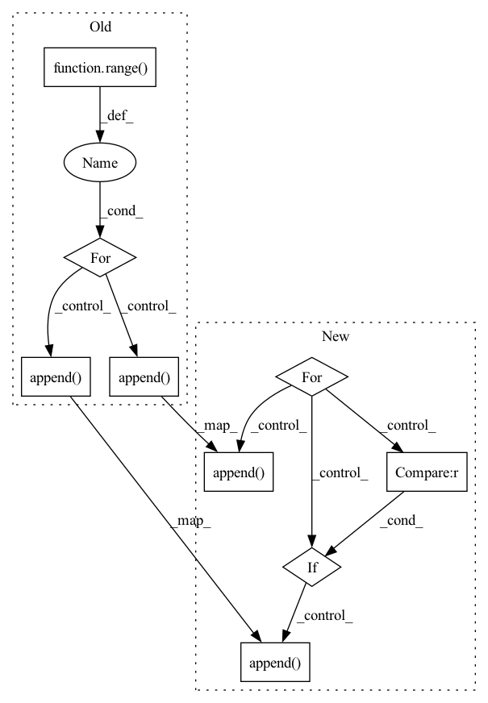

Pattern ID :430

Before Change
nn.ReLU()
])
for l in range(num_layers_linear_hidden - 1):
self.operators.append(nn.Linear(hidden_dim, hidden_dim))
self.operators.append(nn.ReLU())
// self.operators.append(nn.Dropout(0.2))
self.operators.append(nn.Linear(hidden_dim, 2 * action_dim))
After Change
nn.Linear(in_dim, prev_object[1]),
])
for layer, argument in policy_structure[:-1]:
if layer == "linear":
self.operators.append(nn.Linear(prev_object[1], argument))
prev_object = (layer, argument)
elif layer == "relu":
assert argument is None, "No argument for ReLU please"
self.operators.append(nn.ReLU())
elif layer == "dropout":
self.operators.append(nn.Dropout(argument))
else:
raise NotImplementedError(f"{layer} not known")
In pattern: SUPERPATTERN
Frequency: 3
Non-data size: 9
Instances
Fragment ID: 1307312
Project Name: tmdt-buw/karolos
Commit Name: bda97ff0aa40ddff62e42733856c4c66cc37b8b6
Time: 2020-05-13
Author: timo.thun@ima-ifu.rwth-aachen.de
File Name: agents/nnfactory/sac.py
M Class Name: Policy
N Class Name: Policy
M Method Name: __init__(6)
N Method Name: __init__(7)
M Parent Class: nn.Module
N Parent Class: nn.Module
M File Name: agents/nnfactory/sac.py
N File Name: agents/nnfactory/sac.py
M Start Line: 65
M End Line: 87
N Start Line: 88
N End Line: 108
Fragment ID: 1307307
Project Name: adrienchaton/perceptualaudio_pytorch
Commit Name: f11eef42713b48bcc0c007a19c613718ffe2f9f5
Time: 2020-03-02
Author: 35500385+adrienchaton@users.noreply.github.com
File Name: models.py
M Class Name: classifnet
N Class Name: classifnet
M Method Name: __init__(4)
N Method Name: __init__(4)
M Parent Class: nn.Module
N Parent Class: nn.Module
M File Name: models.py
N File Name: models.py
M Start Line: 59
M End Line: 82
N Start Line: 68
N End Line: 88
Fragment ID: 1307309
Project Name: tmdt-buw/karolos
Commit Name: bda97ff0aa40ddff62e42733856c4c66cc37b8b6
Time: 2020-05-13
Author: timo.thun@ima-ifu.rwth-aachen.de
File Name: agents/nnfactory/sac.py
M Class Name: Critic
N Class Name: Critic
M Method Name: __init__(4)
N Method Name: __init__(5)
M Parent Class: nn.Module
N Parent Class: nn.Module
M File Name: agents/nnfactory/sac.py
N File Name: agents/nnfactory/sac.py
M Start Line: 34
M End Line: 53
N Start Line: 45
N End Line: 65